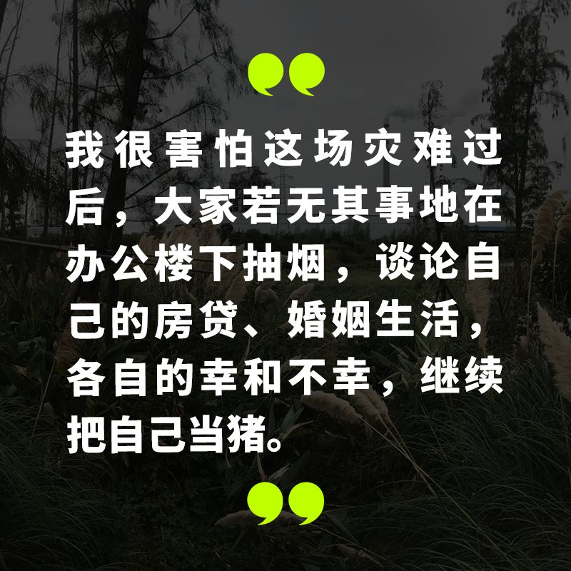
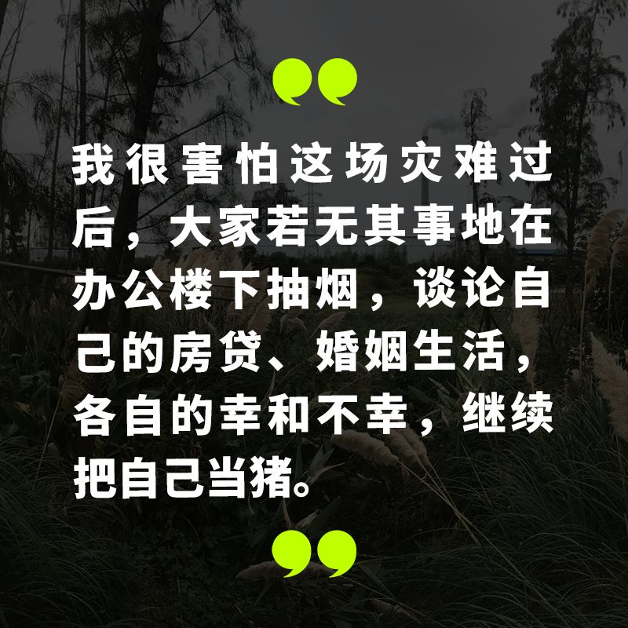
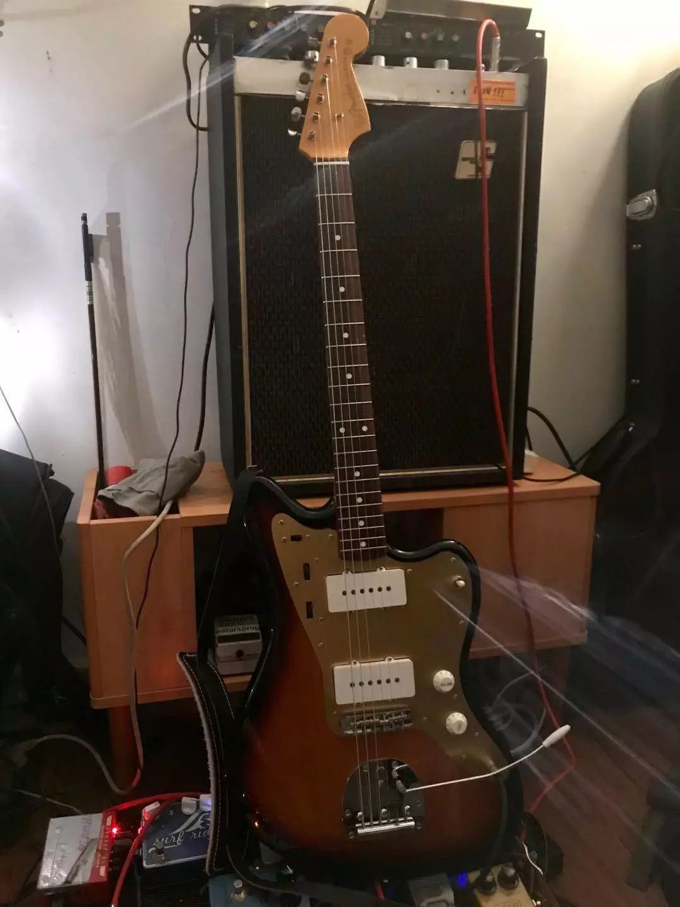
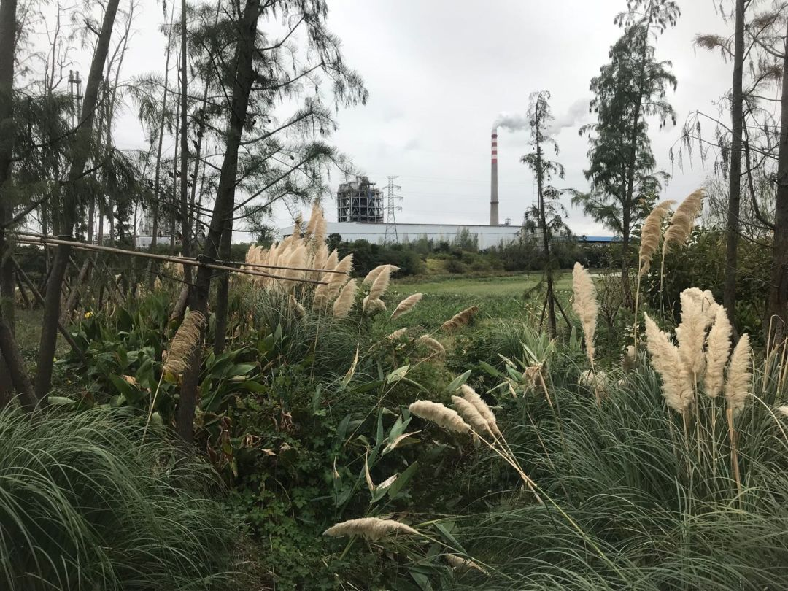
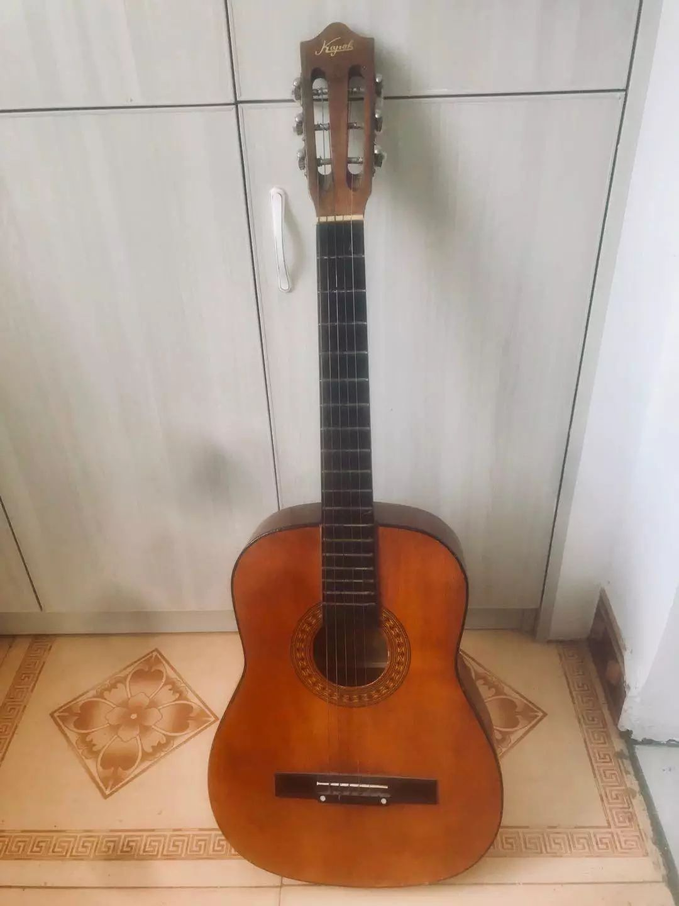

不能出门？在家拍照啊！这里正在征集…
原文链接 备份链接 今日立春 疫情形势严峻 不盲目歌颂 不滥抒情 要说真话 要做实事 我们致敬那些在前线与病毒抗争的英雄。作为摄影师，我们尤其致敬在前线用镜头记录这个事件的记者和摄影师们。但我们知道，这毕竟是一场特殊的战斗，并不是每个人 …
 

疫情刚开始的时候，我们还没想到形势会发展成后来那样，那时我们只是对湖北籍的朋友致以了常规关心，回去了吗？家里没事吧？注意安全。年后见。
但日子翻得一天比一天艰难。中国的中心省份被完全封锁，千家万户亲朋挚友隔绝禁足，身在湖北的朋友短短几天之间就与我们之间隔着巨大的不确定性河流。
每一个人都在风暴眼里，但还有一些人更在风暴中心的湍流之中。我们尽管担心自己的安危，但也无法漠视他们的处境。
花伦乐队的吉他手朱明康就是其中的一位朋友，他是我们的老同事。两年前，他离开北京在深圳工作，之后每次回到北京都是为乐队录音。上次见到他，是去年野格猎声现场的录制。
一别后再联系，他已在累计报告确诊病例 711 例的湖北宜昌（截至 2 月 9 日 11 时）被封锁了十五天，既然 “时间多得是”，我们就请他说了说这十几天来心里想的那些事。以下是他的自述。
新春平安，别的朋友们。我现在在湖北宜昌，经历了封城和市内禁行，已经十天没出门了。回程时本想带上吉他，春节没事呆家里弹弹琴的，但春节回家前有一点焦虑，加上去年下半年我妈刚做了一个大手术，想着早点回去陪陪家人，机票又是半夜出发的，连公司年会都没参加，到家才发现忘带了吉他。
朱明康用的一把 Fender 的日产 Jazzmaster
我回宜昌的第二天，武汉就宣布开始封城了。我的第一反应是，原来疫情比我们在电视里、网上了解到的信息要更严重。先关心了一下还在武汉上班的几个老朋友，有的在行政机关工作，有的在医疗行业做药品生意，他们回复的信息没带表情包，很严肃，也愤怒，担忧。
武汉封城后的一两天，宜昌这边的县市也开始警惕起来，陆续有地方政府的微信号发布疫情和预防消息。那几天我还照常出了门，给家人准备年货。紧接着，我发现当地的年轻人开始戴口罩了，我去了药店两次，终于也买到了口罩，跟家人科普了防御措施，叮嘱亲戚们不要出门晃。但直到大年初二，街上的老人们才都纷纷戴上口罩。初三开始我们这边的道路交通封闭、禁行，三峡机场也发布了关闭机场的通知，然后街上就完全没人了。
我回宜昌是跟我爸妈一起住。妈妈刚做完手术处于恢复期，需要休息一年，所以去年大半年来，我爸妈平时也几乎不出门，他们相对比较适应宅着。虽然他们不懂 “宅” 是什么意思。这一阵电视比较苦一点，家里的电视已经被看坏了，年后还得换。
照片由受访者提供
你那天问我怎么样，我说 “困在家里生闷气”，我也在想这闷气是从哪来的。如果是一个明白人的话，都会有一种情绪吧，这个春节的心情确实很复杂。社交网络上的信息轰炸，是社会情绪的大规模爆发，也是群体精神状态的折射。抛开国家层面的那些上层建筑来说，这让我不得不反思我所处的行业和日常生活。一方面，我的家乡疫情严重，人们身处恐慌无力和绝望，而身处天南地北的一些同事还开着玩笑说着段子，朋友圈里向往精致生活的 “朋友” 依然发着自己远离病毒的海外生活。这几年很多人不是热衷于讨论感情、职场里的 “同理心” 吗，但是在面对真实的生活和灾难时，它们还有意义吗？
当然，我没有权力去指责谁、干涉谁，毕竟这是每个人自己的生活，我肯定希望大家都能过得平安舒适，远离疾病灾难。我们可以从物理上隔离病毒，但精神污染没办法隔离，这包括我们在这期间看到的一切有关消费灾难的丑陋言行。我知道并不是所有人都会在乎 “清醒地活着” 这件事，但我很害怕这场灾难过后，大家若无其事地在办公楼下抽烟，谈论自己的房贷、婚姻生活，各自的幸和不幸，继续把自己当猪。“佛系” 和 “魔幻” 正在毁掉一代人的精气神，愿意独立思考的人越来越少了。
另外，最近两年谈论最多的是关于各种互联网下沉的话题，但当我看到网上各地预防疫情的 “硬核标语” 时，我才知道真正够沉的还是这些镇里、村里和寨子里的乡村老百姓。坐在办公室里策划下沉方案只是闭门造车罢了。
大部分时间陪着爸妈放着电视剧，然后在家办公。我在 QQ 音乐旗下的音乐播放平台 MOO，主要负责里面的专题内容，包括歌单、采访类的。春节期间的选题本来年前也准备了，但看到这些天的现实情况，我们每天都在调整，一方面尽可能让我们的话题里有价值色彩，避免那些空洞不疼不痒的内容，同时也会选一些正向鼓励和缓解大家情绪焦虑的音乐选题。包括祝福大武汉、这个春节的感受、宅家系列等等，“如何增强在家办公的舒适氛围”、“我向往的小镇生活”、“脏辫男女孩的音乐听起来怎么样” 什么的，我最喜欢的是 “回归极简生活” 那个歌单，还有年前编辑好吃和大热狗做的专题“把年会砍到只剩下抽奖这个环节吧”。

“当时在刷 Facebook，看一下新闻”，结果看到了来自 Massive Attack 发布的关于 Andy Gill 去世的消息。
MOO 在 Gang of Four 的 Andy Gill 去世的那天也推了关于他的歌单。我那天晚上刚看完《爱尔兰人》，看到 Andy 死了的消息还难过了一阵。记得上一次分享他的歌，是刚忙完 VICE 中国 APP 上线的时候，听了首《Damaged Goods》。但是发现在这个时期也没什么人在乎 Andy 死了，连科比死了大家都不得不接受，更何况 Andy。接下来的几年可能有更多我们多年追随、信奉的人相继离开，想到这个我很沮丧。再看看我们国家这边，垮掉的一代。
这个时候乐队生活比较靠后。我奶奶怕我无聊，给我从柜子里翻出来一把红棉牌的木吉他，是之前一个长辈玩过的，跟烧火棍差不多，弹不了还少根弦。我花了一下午时间把它改造了一下，最近偶尔就在家瞎弹这把琴。
穿越时间的红棉吉他派上了用场
花伦的成员里，我跟丁茂回宜昌了，Rubey 刚从老家西安返回北京，因为他要提前为他自己经营的 Zamami 居酒屋做准备了，对居酒屋老板来说未来几个月的日子可能比较难熬。贝斯手王伟和鼓手王旭也都还呆在老家呢，我猜这时王伟应该宅家带娃，王旭正在更新他的 “野点电台”。年前我们计划过，不出意外的话，今年会准备一张很不一样的新专辑。
在非常时期，如果大家呆在家里各自安好的话，会有心情去欣赏我们喜欢的音乐，但对于战斗在一线、活在恐惧里的病人和家属来说，它毫无意义。对于身处外围的旁观者来说，它已经变成了一种释放情绪的作秀工具。看看最近内地新发布的加油新歌吧，抛开艺术感不说，真正需要加油和鼓励的人，会听这些东西吗？内心渴望获得力量和勇气的人会需要这些吗？
微博上一个坂本龙一的采访恰好谈到这件事，他完全知道音乐的真实力量，所以他从来不滥用这种力量和影响。同时我也不希望教授在中国被解读得特别低龄化和偶像化。
说实话，看到那些奋斗在一线的人们、那些破碎的家庭和城市，我实在不知道能为他们做点什么，但我知道这个时刻不该做什么。
汶川地震那次，我们还年轻，很快在武汉 VOX 发起了一个募捐演出，尽了一份微薄之力。但现在，我想我们会用别的方式为这座城市做点什么。
希望和我一样的 “被隔离和封锁的人” 不要乱跑，好好在家把身体养好，借着这个时间好好重新一下认识自己，认识自己所处的环境，计划接下来要做的事是否有意义。每次回到宜昌，我都会去江边溜达一圈，这次结束封城之后，我想骑着自行车出去春游，好好体验一下健康的世界是怎样的。另外把朋友圈好好清理一下，因为有些人实在太傻逼了。
但这不太重要，现在没有什么有关疫情失控的坏消息就是一件值得高兴的事，对吗？
// 采访、编辑：刘阳子
在这次疫情中，你是否被迫改变了自己的生活习惯，你和周围的人产生了怎样新的关系，你获得了哪些观察和思考？如果你有想法想要分享，请发送电子邮件到 tougao@yishiyise.com，注明 “武汉呼叫”，我们的编辑看到后可能会与你联系。
2019 年年末的时候我们希望每个人都能在 2020 年更脚踏实地一点，而 2020 如此凶猛，当我们都困在这场灾难之中，每一个你身边的故事带来的感受或许都将指向我们的未来。
原文链接 备份链接 今日立春 疫情形势严峻 不盲目歌颂 不滥抒情 要说真话 要做实事 我们致敬那些在前线与病毒抗争的英雄。作为摄影师，我们尤其致敬在前线用镜头记录这个事件的记者和摄影师们。但我们知道，这毕竟是一场特殊的战斗，并不是每个人 …
原文链接 备份链接 - 疫 情 之 下 - 只有在这样的特殊时刻，我们才体会到平平常常的日子是多么美好，多么幸福…… ” 疫情爆发得如此迅猛，让所有人始料未及。 己亥年腊月二十九，公历2020年1月23日，我去单位上年前最后一天班，那时我 …
原文链接 备份链接 “出不去，进不来。走不了，不敢走。” 江与湖 No.154 何处惹尘埃 黄冈：疫区副中心的春节 作者：花鳞 韩国电影《釜山行》，讲了一个逃离丧尸围城的故事，父亲用自己的生命换回女儿一条命。但据说，这部电影其实有两个 …
原文链接 备份链接 逃离大武汉|中经武汉封城日记 2020-01-24 09:00 作者：老詹 来源：中国经营网 文/老詹 今天是1月23日，农历腊月廿九。凌晨6﹕10，我在睡梦中突然被急促的电话铃声吵醒，在汉口打工的侄子大声说：“叔，快 …
原文链接 备份链接 李克胜在武汉。图片来源：受访者供图 口述 | 李克胜 整理 | 汪畅 44岁的上海货车司机李克胜，义务承揽运送医疗物资前往武汉的工作，带着7桶泡面，独自踏上千里之路。 返沪后，他马不停蹄，再次踏上赴汉之旅。 他曾接到妻 …